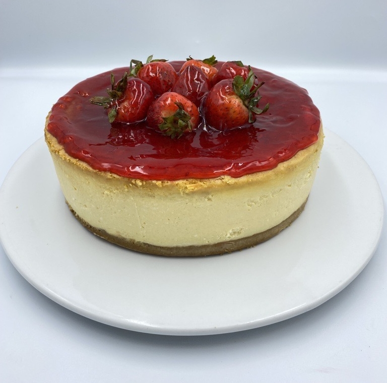
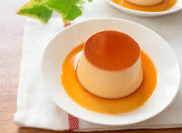

Tarta de Chocolate

Cheesecake de Fresas

Flan de Caramelo
Tarta de Chocolate
Ingredientes:
- 200g de chocolate negro
- 150g de harina
- 150g de azúcar
- 3 huevos
- 100g de mantequilla
- 1 cucharadita de polvo de hornear
Preparación:
- Precalienta el horno a 180°C.
- Derrite el chocolate con la mantequilla.
- En un bol, bate los huevos con el azúcar.
- Añade la harina y el polvo de hornear, mezcla bien.
- Incorpora el chocolate derretido y mezcla hasta obtener una masa homogénea.
- Vierte la mezcla en un molde y hornea por 30 minutos.
Cheesecake de Fresas
Ingredientes:
- 200g de galletas trituradas
- 100g de mantequilla derretida
- 300g de queso crema
- 150g de azúcar
- 200ml de crema para batir
- 200g de fresas frescas
- 1 sobre de gelatina sin sabor
Preparación:
- Mezcla las galletas trituradas con la mantequilla y presiona en el fondo de un molde.
- Refrigera por 30 minutos.
- Bate el queso crema con el azúcar hasta que quede cremoso.
- Disuelve la gelatina en un poco de agua caliente y agrégala a la mezcla de queso.
- Incorpora la crema para batir y mezcla bien.
- Vierte sobre la base de galletas y refrigera por al menos 4 horas.
- Decora con fresas frescas antes de servir.
Flan de Caramelo
Ingredientes:
- 4 huevos
- 500ml de leche
- 200g de azúcar
- 1 cucharadita de esencia de vainilla
Preparación:
- Carameliza el azúcar en un molde.
- Mezcla los huevos con la leche y la vainilla.
- Vierte la mezcla en el molde y cocina a baño maría por 45 minutos.
- Refrigera y desmolda antes de servir.